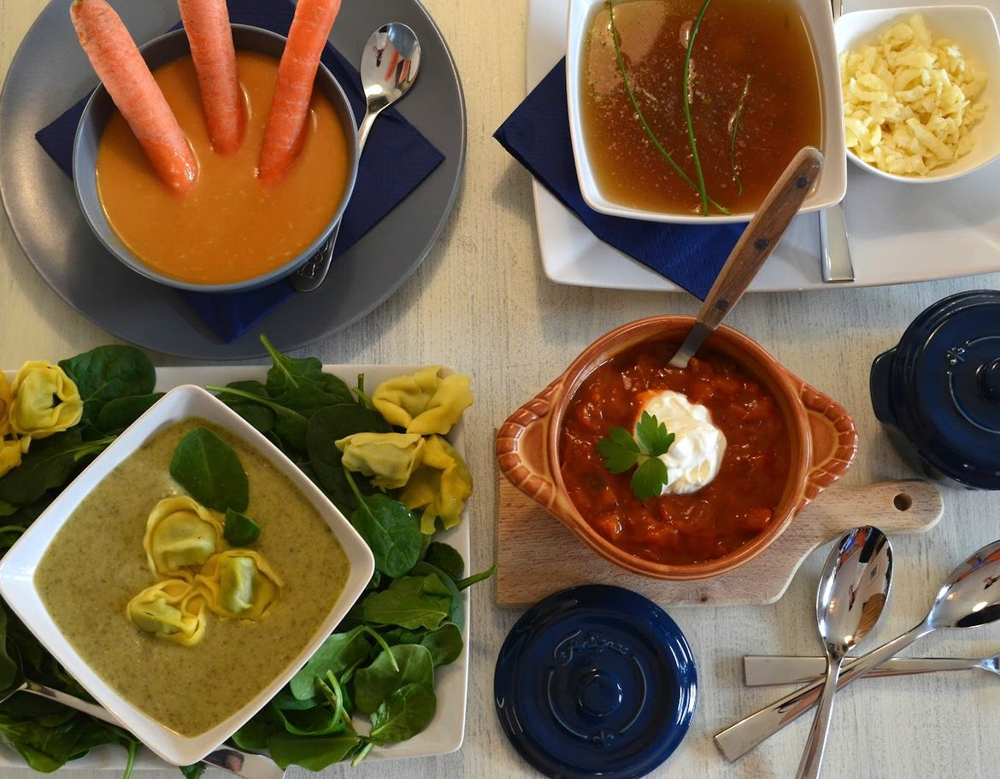
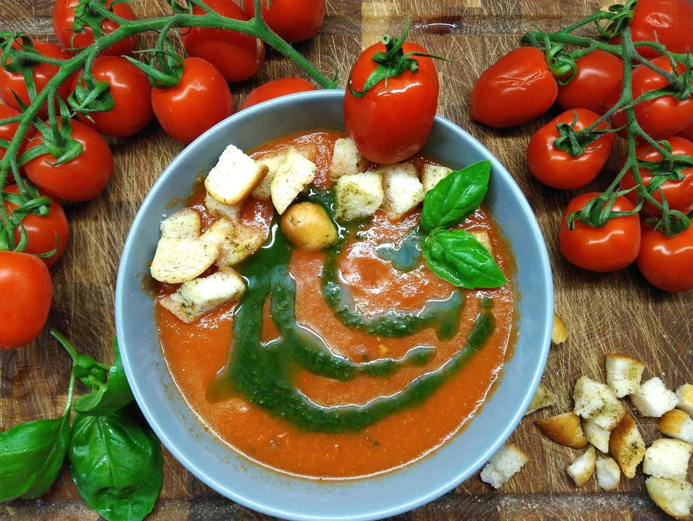
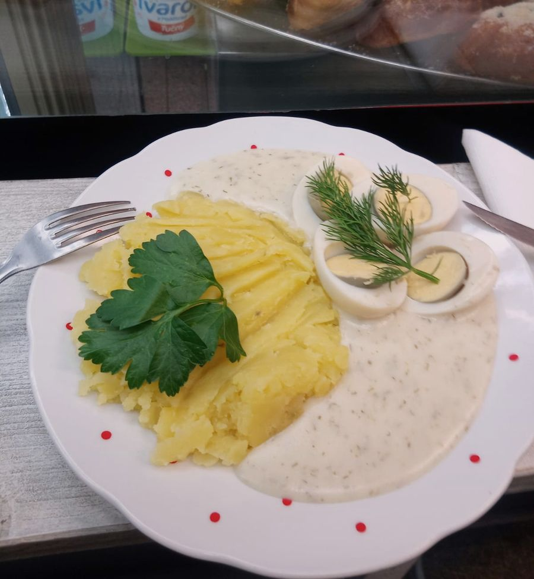
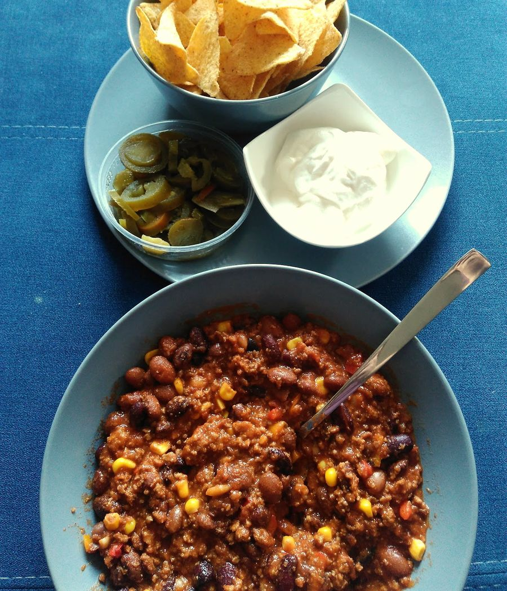
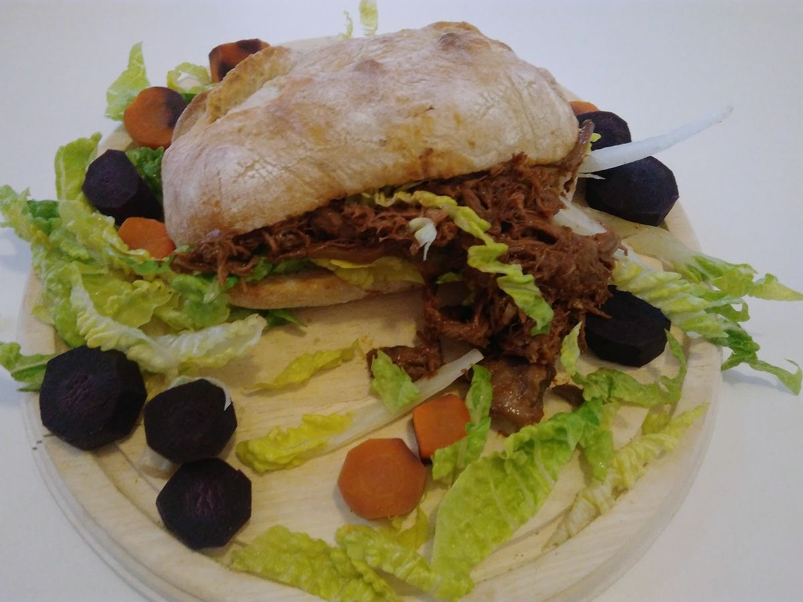
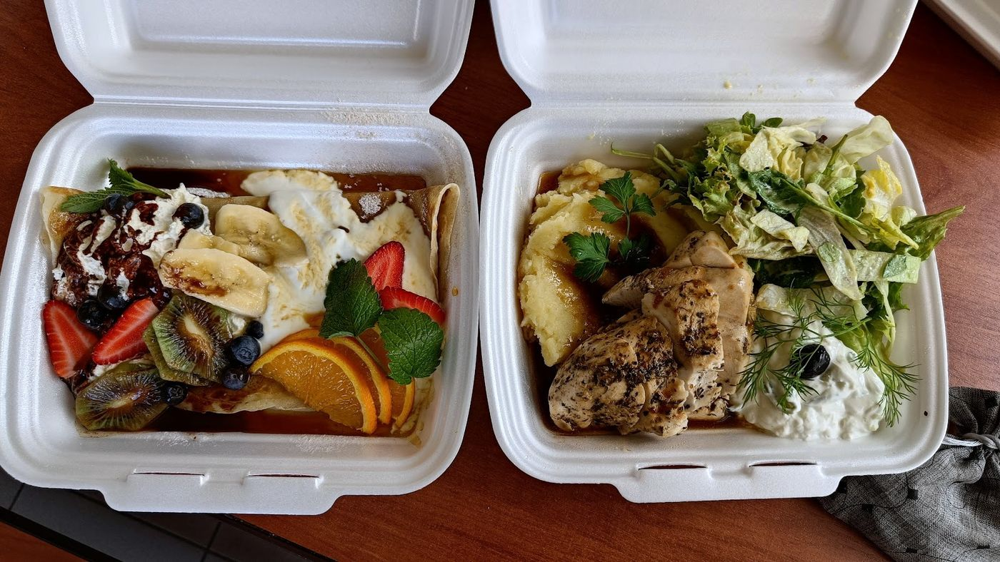
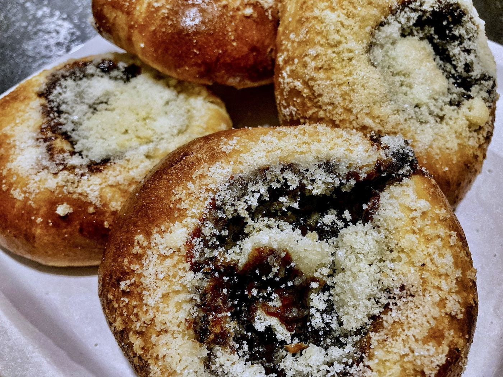
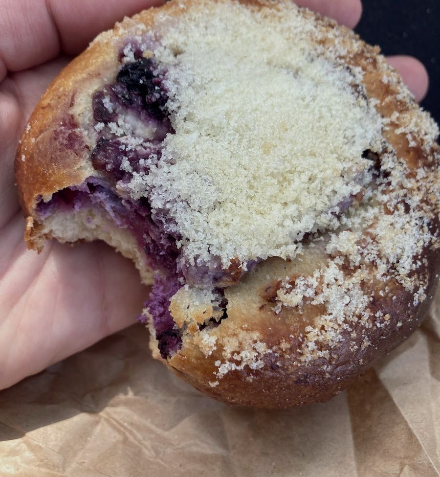
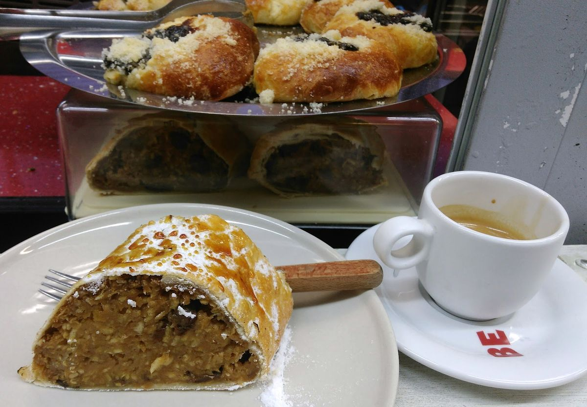
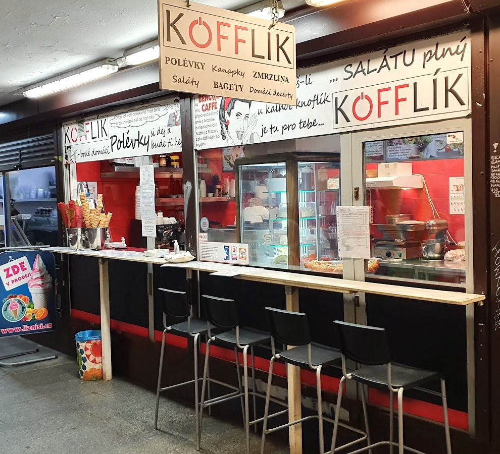

KÖFFLÍK
MenuPolévkárna a bistro v podchodu metra Strašnická, Praha 10.
Polévkárna a bistro v podchodu metra Strašnická, Praha 10.

Horké a domácí. Polévky se u nás střídají a na výběr jich bývá několik.





K polévce teplé jídlo, kanapky, saláty, bagety a rillettes na chlebu. Podle Googlu vyjde oběd na 100 až 200 Kč, s sebou nebo na místě u pultu.
„Nejlepší kynuté koláče v Praze!“
Martin, recenze na Googlu


Makové, povidlové, tvarohové s borůvkami. Hodně náplně, drobenka navrchu, do papíru s sebou.
K tomu štrúdl a espresso.

Objednejte si u nás předem dvanáct a více porcí a my vám připravíme polední menu podle vašeho přání.
Španělský ptáček, gulášek, rabínova kapsa, špíz z vepřové panenky, souvlaki nebo kuřecí řízek Ondráš. To vše a mnohem víc můžeme uvařit právě pro váš kolektiv.
Zavolat 606 585 315Moc příjemné překvapení u metra v podchodu. Pánové evidentně svou práci milují a je to znát. Pochutnala jsem si za rozumnou cenu. Víc takových podniků!Eva, recenze na Googlu
Boží kynutý koláč. Měla jsem koláč s náplní borůvky a tvaroh. Těsto luxusní, vláčné, náplně dost. Chuťově jak od babičky.Stevie, recenze na Googlu
Doporučuji luxusní koláče (hodně náplně, těsto výborné, měla jsem už všechny) a vlastně cokoliv tam zkusit.Michaela, recenze na Googlu
Kofflík je totiž přesně ten typ podniku, kvůli kterému jste ochotni jet tři zastávky tramvají navíc, i když máte „svou“ kavárnu za rohem.Alex, recenze na Googlu

| Pondělí | 11:00–19:00 |
| Úterý | 11:00–19:00 |
| Středa | 11:00–19:00 |
| Čtvrtek | 11:00–19:00 |
| Pátek | 11:00–19:00 |
| Sobota | zavřeno |
| Neděle | zavřeno |